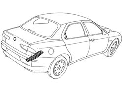
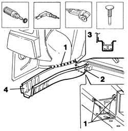
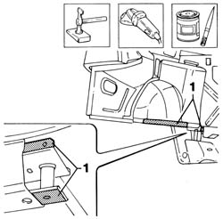
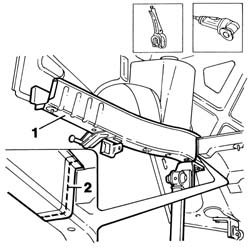
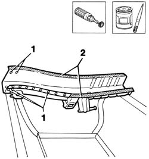
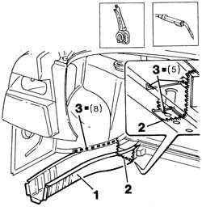
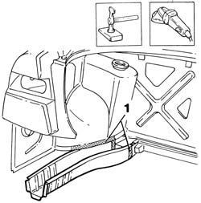
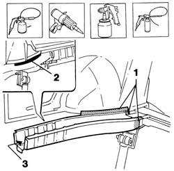

7210B60 R.R. BOOT FLOOR SIDE MEMBER
- Path
- Procedures > 72 PANELS AND FRAME > 7210 REMOVING REFITTING > 7210B structure elements-central and rear part > 7210B60 R.R. BOOT FLOOR SIDE MEMBER
- Kind
- repair procedure (removal / refitting; the operation number is the code)
- Applies to
- all engines; all production periods
- Interactive page
- https://sloeber94.github.io/elrnDB-a156/en/#/3239039
Applies to: all engines; all production periods
 Removing
Removing
 Refitting
RefittingCheck if any of the connected parts are deformed by checking body alignment dimensions. Use appropriate measurement tools (reference rigs, templates or gauges).
Straighten the body if necessary.

Applies to: all engines; all production periods
Use a rotary brush to clean the areas to be ground in order to expose the weld spots.
1. Drill out the weld spots shown in the figure.
2. Use a circular saw to follow the cutting lines shown in the figure.
3. Cross-sections of key areas as a guide to allow the operator to adjust cutting position and depth in order to avoid damage to the underlying panels.
4. Use a chisel and hammer to remove the rail section from the car.

Applies to: all engines; all production periods
Straighten the panel edges using a mallet and profiled stake.
Use a grinding wheel to remove the weld spot residues.
1. Apply the electroweldable paint finish to the areas shown in the figure.

Applies to: all engines; all production periods
Refitting
RemovingCut the rail section at the bench. Take care to leave a sufficiently wide section of steel to attach the new part to.
1. Position the part on the car and secure using self-locking grippers and a template.
2. Use a circular saw to trim the panel and remove excess parts.
Remove the part from the car.

Applies to: all engines; all production periods
1. Make a hole as shown in the figure.
Working at the bench, use a rotary brush to remove the corrosion-proofing from the areas shown in the figure.
2. Apply the electric weld paint finish to edges in contact with the car.

Applies to: all engines; all production periods
1. Position the part on the car and secure using self-locking grippers.
2. Use a MIG welder to seam weld along the line shown in the figure.
3. Use a MIG welder to fill the holes made previously.

Applies to: all engines; all production periods
Correct any deformations in the panel using a profiled stake and mallet.
1. Use a grinding wheel to level weld residues and remove.

Applies to: all engines; all production periods
1. Apply rust-proofing to newly-welded areas.
2. Seal the joint lines shown in the figure.
Apply paint.
3. Apply wax oil inside the rail.
